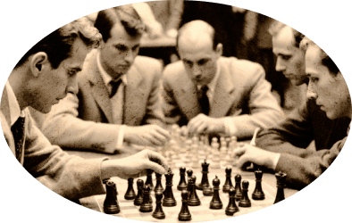

Превратите уездный город
в столицу
земного шара
Оплатите взнос на телеграммы для организации Международного васюкинского турнира по шахматам
Поддержать шахматную мысль
Подробнее о турнире
Дело помощи утопающим — дело рук самих утопающих!
Шахматы двигают вперед не только культуру, но и экономику!
Лед тронулся, господа присяжные заседатели!
Дело помощи утопающим — дело рук самих утопающих!
Шахматы двигают вперед не только культуру, но и экономику!
Лед тронулся, господа присяжные заседатели!
Чтобы поддержать Международный васюкинский турнир  посетите лекцию на тему:
«Плодотворная дебютная идея»
и Сеанс
одновременной игры в шахматы на 160 досках
гроссмейстера О. Бендера
Место проведения:
Клуб «Картонажник»
Дата и время мероприятия:
22 июня 1927 г. в 18:00
Стоимость входных билетов:
20 коп.
Плата за игру:
50 коп.
Взнос на телеграммы:
100 руб.
21 руб. 16 коп.
По всем вопросам обращаться в администрацию к К. Михельсону
Этапы преображения Васюков
Будущие источники обогащения васюкинцев
1
Строительство железнодорожной магистрали Москва-Васюки
2
Открытие фешенебельной гостиницы «Проходная пешка» и других небоскрёбов
3
Поднятие сельского хозяйства в радиусе на тысячу километров: производство овощей, фруктов, икры, шоколадных конфет
4
Строительство дворца для турнира
5
Размещение гаражей для гостевого автотранспорта
6
Постройка сверхмощной радиостанции для передачи всему миру сенсационных результатов
7
Создание аэропорта «Большие Васюки» с регулярным отправлением почтовых самолётов и дирижаблей во все концы света, включая Лос-Анжелос и Мельбурн
Участники турнира
/
Хозе-Рауль Капабланка
Чемпион мира по шахматам
Подробнее
Эммануил Ласкер
Чемпион мира по шахматам
Подробнее
Александр Алехин
Чемпион мира по шахматам
Подробнее
Арон Нимцович
Чемпион мира по шахматам
Подробнее
Рихард Рети
Чемпион мира по шахматам
Подробнее
Остап Бендер
Чемпион мира по шахматам
Подробнее
Дело помощи утопающим — дело рук самих утопающих!
Шахматы двигают вперед не только культуру, но и экономику!
Лед тронулся, господа присяжные заседатели!
Дело помощи утопающим — дело рук самих утопающих!
Шахматы двигают вперед не только культуру, но и экономику!
Лед тронулся, господа присяжные заседатели!